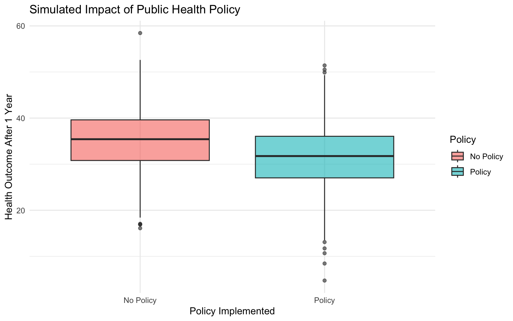
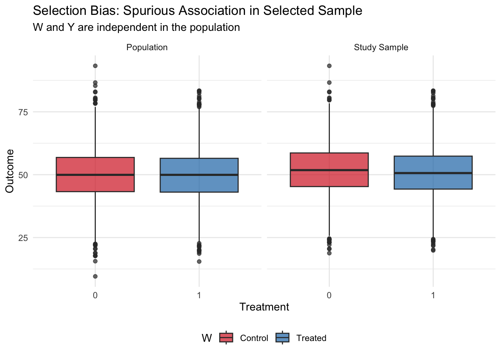
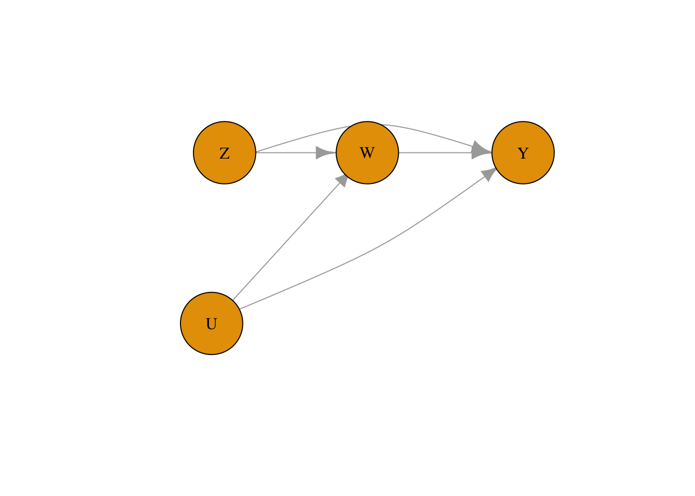
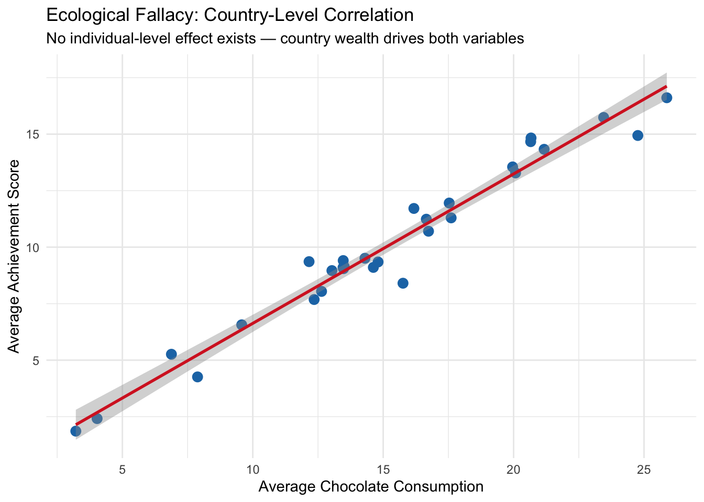

7 Other Common Pitfalls and How to Identify Them
Class materials
Slides: Module 7
Textbook reading
Supplementary reading
Hernán MA, Hernández-Díaz S, Robins JM. (2004). A Structural Approach to Selection Bias. Epidemiology, 15(5), 615–625.
Lévesque LE, Hanley JA, Kezouh A, Suissa S. (2010). Problem of Immortal Time Bias in Cohort Studies: Example Using Statins and Cancer. BMJ, 340, b5087.
Topics covered
- Measurement error: non-differential and differential measurement bias
- Selection bias and its connection to DAGs (colliders)
- Non-compliance: assigned vs. received treatment
- Competing risks and immortal time bias
- Ecological fallacy and reverse causation
- Non-causal diagrams
- Publication bias and p-hacking
- Over- and mis-interpretation of statistical analyses
- The complete Causal Credibility Checklist
7.1 Measurement Error
Measurement error occurs when the recorded or observed value of a variable differs from its true value. Even with the best intentions, measurements are rarely perfect. There are two main types of measurement error:
Non-differential measurement error is random and does not depend on other variables in the analysis. The measurement error is equally likely to push the recorded value up or down, independent of the true treatment status or outcome. In causal inference, non-differential measurement error in the treatment typically attenuates (biases toward zero) the estimated causal effect, making true effects appear smaller than they actually are. The amount of attenuation depends on the ratio of true variance to total variance (true plus error) — a relationship known as the “reliability ratio.”
Differential measurement error depends on other variables — for example, the error might be larger for treated individuals or for those with higher outcomes. Differential measurement error can bias results in any direction, making it particularly dangerous because we cannot easily predict the direction of bias.
7.1.1 R Simulation: Non-differential Measurement Error in Treatment
Let’s simulate a simple example where true treatment has a causal effect of 2 units on the outcome, but the treatment is measured with random error:
set.seed(42)
n <- 5000
# True treatment (continuous: e.g., physical activity level in hours/week)
W_true <- rnorm(n, mean = 5, sd = 2)
Y <- 3 + 2 * W_true + rnorm(n, sd = 3) # True effect of W on Y is 2
# Non-differential measurement error in treatment
W_measured <- W_true + rnorm(n, sd = 2) # Noisy measurement
# Regression with true vs measured treatment
model_true <- lm(Y ~ W_true)
model_measured <- lm(Y ~ W_measured)
cat("Effect with true treatment:", round(coef(model_true)["W_true"], 3), "\n")## Effect with true treatment: 1.996## Effect with measured treatment: 1.018## True effect: 2cat("Attenuation factor:", round(coef(model_measured)["W_measured"] / coef(model_true)["W_true"], 3), "\n")## Attenuation factor: 0.51What we learn: Non-differential measurement error in the treatment attenuates the estimated effect toward zero. The measured treatment shows an effect estimate noticeably smaller than 2 (typically around 1.1–1.2). The attenuation factor reflects how much “signal” is lost in the noisy measurement: the ratio of true variance to total variance (true variance plus error variance). In this example, the measurement error standard deviation is 2, while the true treatment standard deviation is 2, so the reliability is approximately 0.5, and we expect the effect estimate to be reduced by roughly half.
7.1.2 Measurement Bias: The Smoking and Lung Cancer Example
Measurement bias occurs when the method used to collect data leads to systematic errors in the values recorded for a variable. This can happen when an exposure, outcome, or confounder is misclassified or inaccurately measured in a way that consistently overstates or understates the true value. Measurement bias is problematic because it can distort observed associations and lead to incorrect conclusions about the relationships between variables. Unlike random measurement error, which tends to cancel out over large samples, measurement bias introduces consistent errors that don’t disappear with more data. It can arise from faulty instruments, poorly worded survey questions, or inconsistent data collection procedures, and it often goes unnoticed unless explicitly tested for.
In public health and medical research, measurement bias can affect both exposure and outcome variables. For example, if smoking behavior is self-reported and individuals tend to underreport how much they smoke, the study will underestimate the true relationship between smoking and lung cancer. Similarly, if age is recorded in broad categories rather than precise years, it can limit the ability to adjust accurately for confounding. Even adjusting for confounders may not correct measurement bias if those confounders are also measured with error. This makes it critical to use reliable, validated measurement tools and to account for potential misclassification during analysis, especially in observational studies where data quality may vary widely.
This simulation demonstrates measurement bias by comparing the estimated effect of smoking on lung cancer using the true smoking values versus mismeasured (underreported) smoking. The model using mismeasured smoking underestimates the true effect, showing how systematic error in recording an exposure can bias causal estimates toward zero:
set.seed(42)
n <- 2000
age <- rnorm(n, mean = 50, sd = 10)
true_smoking <- 2 * age + rnorm(n)
# no age to isolate measurement bias in smoking
lung_cancer <- 3 * true_smoking + rnorm(n)
measured_smoking <- true_smoking - rnorm(n, mean = 1, sd = 0.5)
true_model <- lm(lung_cancer ~ true_smoking + age)
biased_model <- lm(lung_cancer ~ measured_smoking + age)
true_coef <- summary(true_model)$coefficients["true_smoking", "Estimate"]
biased_coef <- summary(biased_model)$coefficients["measured_smoking", "Estimate"]
true_coef## [1] 2.979996## [1] 2.422347We can capture measurement bias in DAGs as well by denoting the measured exposure variable as W. In the example below, the measured treatment W is affected both by confounders and the exposure variable W:
library(bnlearn)
library(igraph)
set.seed(42)
dag <- model2network("[W][Y|W][W*|W:U][U]")
g <- as.igraph(dag)
plot(
g,
layout = layout_as_tree(g, root = "W*"),
vertex.size = 40,
vertex.label.color = "black",
edge.arrow.size = 1
)
7.2 Measurement Error in Confounders
Measurement error in confounders creates a different problem. Even if we adjust for a confounder, if that confounder is measured with error, we cannot perfectly remove its confounding effect. The result is residual confounding — some bias remains even after adjustment.
7.2.1 R Simulation: Residual Confounding from Imperfect Confounder Measurement
set.seed(42)
n <- 5000
X_true <- rnorm(n) # True confounder
W <- 0.5 * X_true + rnorm(n) # Treatment depends on confounder
Y <- 3 * W + 2 * X_true + rnorm(n) # True effect of W is 3, confounding effect is 2
# Measure confounder with error
X_measured <- X_true + rnorm(n, sd = 1.5)
# Adjust for true vs measured confounder
model_true_adj <- lm(Y ~ W + X_true)
model_meas_adj <- lm(Y ~ W + X_measured)
model_unadj <- lm(Y ~ W)
cat("Unadjusted estimate:", round(coef(model_unadj)["W"], 3), "\n")## Unadjusted estimate: 3.806## Adjusted (true confounder): 3.022## Adjusted (measured confounder): 3.606## True effect: 3What we learn: Adjusting for the true confounder removes confounding bias and gives an estimate very close to the true effect of 3. Adjusting for the measured (noisy) confounder reduces bias compared to the unadjusted estimate but does not remove it entirely — the estimate falls somewhere between the fully biased (unadjusted) and fully corrected (true confounder) values. This demonstrates a major practical challenge in observational studies: confounders are almost always measured with some degree of imprecision (questionnaire responses, proxy measures, historical records), and this imprecision leaves residual confounding. Understanding this limitation helps explain why observational estimates often differ from randomized trials.
7.3 Selection Bias
Selection bias occurs when the process of selecting participants into the study depends on both treatment and outcome (or on causes of both). In the language of directed acyclic graphs (DAGs), selection bias arises from conditioning on a collider — a variable that is caused by two other variables in the causal graph.
A collider is a variable that has arrows from two different causes pointing into it. When we condition on a collider (by restricting analysis to a selected sample), we create a spurious association between those two causes, even if they are independent in the full population. This is one of the most insidious sources of bias because it can create associations where none exist.
7.3.1 R Simulation: Spurious Association from Selection on a Collider
In this example, treatment W and outcome Y are completely independent in the source population. However, selection into the study depends on both W and Y, creating a spurious negative association:
set.seed(42)
n <- 10000
# In the population: W and Y are independent!
W <- rbinom(n, 1, 0.5)
Y <- rnorm(n, mean = 50, sd = 10)
# Selection into study depends on both W and Y
# More likely to be in study if treated OR if outcome is high
selection_prob <- plogis(-2 + 1.0 * W + 0.05 * Y)
selected <- rbinom(n, 1, selection_prob)
df_pop <- data.frame(W, Y)
df_study <- df_pop[selected == 1, ]
# In the full population: no association
cat("Population estimate (true):",
round(mean(df_pop$Y[df_pop$W == 1]) - mean(df_pop$Y[df_pop$W == 0]), 2), "\n")## Population estimate (true): -0.13# In the selected sample: spurious association
cat("Study sample estimate (biased):",
round(mean(df_study$Y[df_study$W == 1]) - mean(df_study$Y[df_study$W == 0]), 2), "\n")## Study sample estimate (biased): -1.07## Study sample size: 6987 out of 10000Now let’s visualize the difference:
library(ggplot2)
plot_df <- rbind(
data.frame(W = factor(df_pop$W), Y = df_pop$Y, Sample = "Population"),
data.frame(W = factor(df_study$W), Y = df_study$Y, Sample = "Study Sample")
)
ggplot(plot_df, aes(x = W, y = Y, fill = W)) +
geom_boxplot(alpha = 0.7) +
facet_wrap(~Sample) +
scale_fill_manual(values = c("0" = "#d62728", "1" = "#1f77b4"),
labels = c("Control", "Treated")) +
labs(title = "Selection Bias: Spurious Association in Selected Sample",
subtitle = "W and Y are independent in the population",
x = "Treatment", y = "Outcome") +
theme_minimal() +
theme(legend.position = "bottom")
What we learn: In the full population, treatment and outcome are completely independent — the true effect is zero. However, when selection into the study depends on both treatment and outcome, analyzing only the selected sample creates a spurious negative association. This occurs because the sample selection mechanism created a collider: those who are treated were “allowed in” to the study even without high outcomes, while untreated individuals needed high outcomes to be selected. This negative correlation is purely a feature of the selection process, not a true causal effect.
Selection bias is particularly concerning in: - Studies with low response rates (who refuses to participate?) - Analyses restricted to a subset with available data (missing data mechanisms) - Hospital-based studies (which patients are hospitalized?) - Occupational cohort studies (who stays employed in the occupation?)
Identifying selection bias requires understanding the selection mechanism and checking whether it depends on both exposure and outcome.
7.4 Non-Compliance
In randomized experiments, we assume that participants receive the treatment they are assigned to. However, in real experiments, sometimes participants might not comply with the treatment they are assigned to. For example, if our example is about the effect of a heart transplant on 5-year mortality, some patients might not undergo surgery even if they were assigned to the surgery group.
This is a threat to validity specific to randomized controlled trials (discussed in Module 2). To account for the potential mismatch between the treatment assigned and the treatment received for a patient in DAG notation, we use two variables. Z represents the assigned treatment, and W represents the received treatment. This is different from how we denote measurement bias because Z can have a causal effect on Y.
library(bnlearn)
library(igraph)
set.seed(42)
dag <- model2network("[Z][U][W|Z:U][Y|W:Z:U]")
g <- as.igraph(dag)
lay <- rbind(
Z = c(-1.1, 0.6),
W = c( 0.0, 0.6),
Y = c( 1.2, 0.6),
U = c(-1.2, -0.6)
)[V(g)$name, , drop = FALSE]
lay <- lay * 0.7
edge_names <- apply(ends(g, E(g), names = TRUE), 1, paste, collapse = "->")
curv <- rep(0, ecount(g))
curv[edge_names == "Z->Y"] <- 0.65
curv[edge_names == "U->Y"] <- -0.15
plot(
g,
layout = lay,
vertex.size = 40,
vertex.label.color = "black",
edge.arrow.size = 1,
edge.curved = curv,
asp = 0,
xlim = c(-1.5, 1.5),
ylim = c(-1.5, 1.5)
)
7.5 Immortal Time Bias
Immortal time bias is a specific type of time-based selection bias that occurs in cohort studies where treatment status is determined after enrollment. The “immortal time” is a period during which the outcome (usually death or another event) cannot occur by definition — because an individual must survive or remain follow-up-eligible to be classified as “treated.” Including this immortal time in the analysis artificially inflates the follow-up time in the treated group, biasing results in favor of the treatment even if there is no true effect.
Classic examples include: - Studies of “Oscar winners” where individuals must be alive to win an Oscar - Cohort studies of drug users where treatment is defined by use during follow-up - Analyses of occupational exposures where workers must remain employed to be “exposed”
7.5.1 R Simulation: Immortal Time Bias in a Survival Study
set.seed(42)
n <- 2000
# Simulate survival times (exponential, no true treatment effect)
true_survival <- rexp(n, rate = 0.1) # Mean survival = 10 years
# Time to receiving "treatment" (e.g., starting a drug, winning an award)
time_to_treatment <- rexp(n, rate = 0.2) # Mean = 5 years
# Who actually gets treated? Only those who survive long enough
treated <- true_survival > time_to_treatment
cat("Proportion treated:", round(mean(treated), 3), "\n")## Proportion treated: 0.692# BIASED analysis: Compare survival of treated vs untreated
# (includes immortal time for treated group)
cat("\n=== Biased analysis (includes immortal time) ===\n")##
## === Biased analysis (includes immortal time) ===## Mean survival, treated: 13.43 years## Mean survival, untreated: 3.64 yearscat("Difference:", round(mean(true_survival[treated]) - mean(true_survival[!treated]), 2), "years\n")## Difference: 9.79 years# CORRECT analysis: Count survival from time of treatment
survival_from_treatment <- true_survival[treated] - time_to_treatment[treated]
cat("\n=== Correct analysis (from treatment time) ===\n")##
## === Correct analysis (from treatment time) ===## Mean survival from treatment: 10.08 years## Expected if no effect: ~10 years (memoryless property)What we learn: Even though treatment has no true effect on survival, the biased analysis shows treated individuals living substantially longer on average. This is because the classification of “treated” itself requires survival — you can only “receive treatment” (or “win an Oscar”) if you survive long enough. The time before treatment is “immortal time” where death is impossible by definition. The correct approach counts follow-up time and events only from the moment of treatment onward. This bias has appeared in prominent published studies and demonstrates why careful attention to the timeline is critical in observational studies.
7.6 Ecological Fallacy
The ecological fallacy is the error of inferring individual-level causal relationships from group-level (aggregate) data. Just because two variables are correlated at the group level does not mean they are causally related at the individual level. Group-level correlations often arise from confounding variables that operate at the group level rather than from direct individual-level effects.
A famous (humorous) example is Messerli (2012), which found a strong correlation between chocolate consumption and Nobel Prize winners across countries. The ecological fallacy here is obvious: eating chocolate does not make individuals win Nobel Prizes. Instead, both chocolate consumption and Nobel achievements are driven by overall national wealth and development.
7.6.1 R Simulation: Group-Level Correlation Without Individual-Level Effect
set.seed(42)
n_countries <- 30
n_per_country <- 200
# Country-level wealth (the true driver)
country_wealth <- rnorm(n_countries, mean = 50, sd = 15)
# Individual-level data
country_id <- rep(1:n_countries, each = n_per_country)
wealth <- rep(country_wealth, each = n_per_country)
# Chocolate consumption: driven by country wealth + individual noise
chocolate <- 0.3 * wealth + rnorm(n_countries * n_per_country, sd = 10)
# Nobel-like achievement: driven by country wealth + individual noise
# NO direct effect of chocolate
achievement <- 0.2 * wealth + rnorm(n_countries * n_per_country, sd = 8)
# Individual-level: controlling for wealth, no chocolate-achievement link
model_individual <- lm(achievement ~ chocolate + wealth)
cat("Individual-level effect of chocolate (adjusted):",
round(coef(model_individual)["chocolate"], 4), "\n")## Individual-level effect of chocolate (adjusted): 0.0142# Country-level aggregation
country_df <- data.frame(
chocolate = tapply(chocolate, country_id, mean),
achievement = tapply(achievement, country_id, mean)
)
model_ecological <- lm(achievement ~ chocolate, data = country_df)
cat("Ecological (country-level) effect of chocolate:",
round(coef(model_ecological)["chocolate"], 4), "\n")## Ecological (country-level) effect of chocolate: 0.6612Now let’s visualize the ecological fallacy:
library(ggplot2)
ggplot(country_df, aes(x = chocolate, y = achievement)) +
geom_point(color = "#1f77b4", size = 3) +
geom_smooth(method = "lm", se = TRUE, color = "#d62728") +
labs(title = "Ecological Fallacy: Country-Level Correlation",
subtitle = "No individual-level effect exists — country wealth drives both variables",
x = "Average Chocolate Consumption", y = "Average Achievement Score") +
theme_minimal()## `geom_smooth()` using formula = 'y ~ x'
What we learn: At the individual level, chocolate consumption has essentially zero effect on achievement even before controlling for wealth — and the effect remains near zero after adjusting for wealth. But at the country level, there is a clear positive correlation between average chocolate consumption and average achievement. This group-level association arises entirely from country wealth, which influences both variables. Interpreting the country-level association as an individual-level causal effect would be the ecological fallacy.
Ecological fallacies commonly occur in: - Policy analyses based on cross-sectional country or region comparisons - Studies using aggregate census or administrative data - Marketing or epidemiological analyses based on geographic variation
The lesson is: group-level associations do not imply individual-level causal effects. To make individual-level causal inferences, we need individual-level data and adjustment for relevant confounders.
7.7 Non-Causal Diagrams
Non-causal diagrams represent associations between variables that do not imply direct cause-and-effect relationships. These diagrams are useful for illustrating statistical relationships that arise from shared causes, correlations due to bias, or measurement artifacts. In non-causal diagrams, arrows may still indicate directional influence, but they are used to reflect associations or data-generating processes, not claims about interventions. Unlike causal diagrams, which are designed to identify and estimate the effects of manipulating one variable on another, non-causal diagrams help clarify patterns in the data without asserting that changing one variable will necessarily change another.
In the context of our simulation, we can use a non-causal diagram to represent the observed association between age and lung cancer without assuming a direct causal relationship. While age and lung cancer may be strongly correlated — older individuals tend to have higher cancer risk — this relationship does not imply that age causes lung cancer in an interventional sense. Instead, age may be acting as a proxy for other underlying factors like cumulative exposure to smoking or environmental risks. A non-causal diagram helps us visualize this statistical association without attributing it to a direct, manipulable pathway, highlighting that not all observed relationships in data should be interpreted as causal.
7.8 Publication Bias and P-Hacking
Publication bias occurs when the likelihood of a study being published depends on the nature or direction of its results — typically favoring studies with statistically significant or “positive” findings. This creates a distorted picture of the evidence in a field, because null or contradictory results are less likely to be seen. P-hacking refers to the practice of manipulating statistical analyses or data collection until a desired (usually statistically significant) result is achieved. This can include selectively reporting outcomes, running many analyses and only publishing those with low p-values, or stopping data collection once a significant result appears. Both practices inflate false-positive rates and undermine the credibility of scientific findings.
In the context of the simulations we have run — whether they involve confounding, selection bias, or measurement error — it’s easy to see how p-hacking or publication bias could skew interpretations. For example, imagine rerunning the simulation many times and only reporting the version where the naive model shows a significant effect of smoking on lung cancer (even if the underlying data or causal structure doesn’t support it). Or selectively reporting only the adjusted model that produces a “clean” result while hiding others. These practices can make even a carefully designed simulation appear misleading. The simulations reinforce the idea that statistical significance is not the same as truth, and that transparency in modeling choices and full reporting of results are critical for avoiding biased conclusions.
7.9 Over- and Mis-Interpretation of Statistical Analyses
Over-interpretation occurs when researchers draw stronger conclusions from statistical results than the data can justify, while mis-interpretation involves misunderstanding what the results actually mean. A common example is interpreting a statistically significant association as proof of causation, even when the study design or model does not support that claim. Another frequent error is overstating the practical importance of a small effect size or assuming that a non-significant result means “no effect.” These issues are often driven by pressure to produce definitive conclusions, even when the data are limited, noisy, or confounded. Careful interpretation requires understanding the limits of the methods used and being transparent about uncertainty, assumptions, and alternative explanations.
In the simulations we have conducted — such as estimating the effect of smoking on lung cancer under different types of bias — it’s easy to see how results can be over- or mis-interpreted. For instance, in a model affected by measurement bias or confounding, one might find a statistically significant association between smoking and lung cancer, but incorrectly conclude that the estimated effect size reflects the true causal effect. Alternatively, if the biased model appears significant and the true model does not, someone might misinterpret that as evidence that adjustment “eliminated” the effect, when in fact it corrected for bias. These examples highlight how even simple models can be misunderstood or overstated, and underscore the importance of grounding interpretation in study design, data limitations, and causal reasoning — not just statistical output.